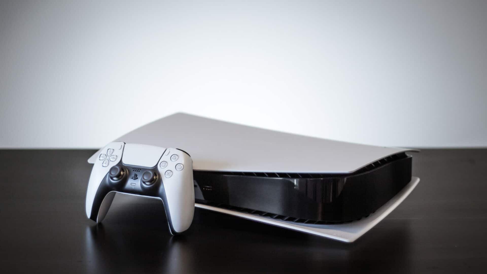
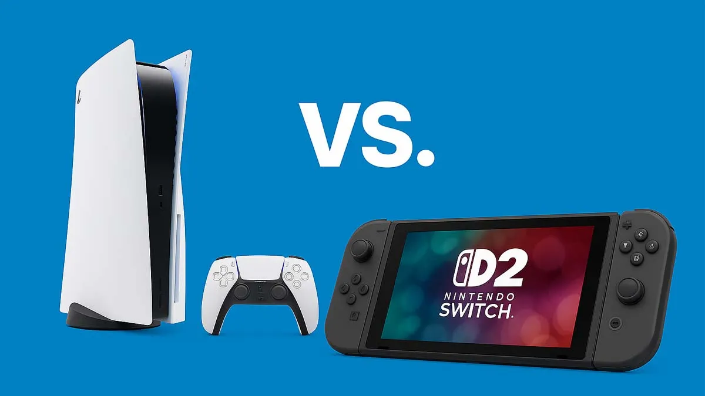

PlayStation 5 vendeu mais que o Nintendo Switch 2 no terceiro trimestre do ano fiscal de 2025
05/02/2026
Sim, você está correto. Os dados financeiros mais recentes, divulgados agora no início de fevereiro de 2026, confirmam que o PlayStation 5 superou o Nintendo Switch 2 em vendas globais durante o terceiro trimestre do ano fiscal de 2025 (outubro a dezembro de 2025).
Embora o Switch 2 tenha tido um lançamento explosivo em junho de 2025, a Sony conseguiu retomar a liderança no período de festas de fim de ano.
Por que o PS5 venceu este "round"?
Fator Black Friday: O PS5 teve descontos agressivos em diversos mercados, superando o Switch 2 em vendas durante a Black Friday por uma margem de aproximadamente 23%.
Disponibilidade de Estoque: Enquanto o Switch 2 ainda enfrentava gargalos pontuais de produção devido à alta demanda de lançamento, a Sony operou com estoque cheio para o Natal.
Grandes Lançamentos: O impacto de blockbusters como Call of Duty: Black Ops 7 ajudou a impulsionar o hardware da Sony no final do ano.
Base Instalada: O PS5 já é um console maduro com uma biblioteca vasta, o que atrai o público de massa durante as promoções de fim de ano, enquanto o Switch 2 ainda está construindo sua base de usuários.
Apesar de ter ficado em segundo lugar no trimestre, o desempenho da Nintendo é considerado excelente por analistas, já que o Switch 2 fechou 2025 como o console mais vendido do ano civil (considerando o acumulado desde o lançamento em junho).